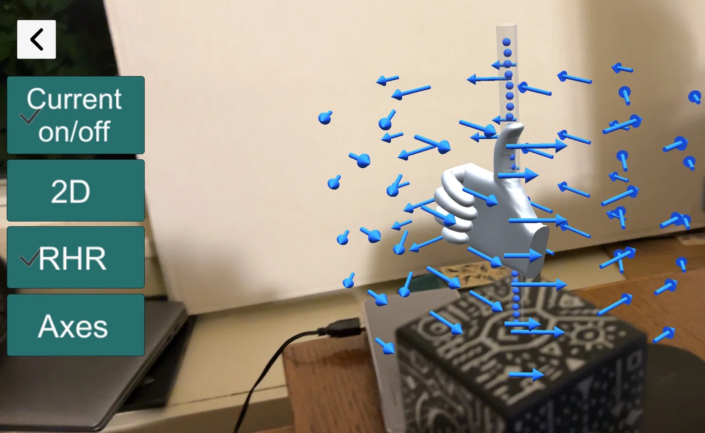

Using Augmented Reality to Improve Spatial Visualization of 3D Physics Concepts
This project investigates the use of MARVLS augmented-reality models in undergraduate physics instruction, with a focus on magnetism concepts that require students to coordinate multiple representations and reason spatially in three dimensions.
The project combines classroom implementation with physics education research to examine how students use AR visualizations, gestures, equations, diagrams, and physical manipulation while developing conceptual understanding.
View NSF Award
What the project is designed to investigate
Spatial visualization
Explore whether manipulable 3D visualizations can help students reason about invisible and spatially complex physics phenomena.
Representational coordination
Study how students connect AR models with equations, vectors, diagrams, symbolic notation, and embodied gestures.
Instructional design
Develop and refine guided lessons that integrate AR models into introductory electricity and magnetism instruction.
Who this site is for
This website is intended for undergraduate physics instructors, students, and physics and engineering education researchers interested in augmented reality, spatial visualization, and the teaching and learning of three-dimensional physics concepts.